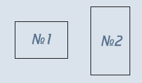
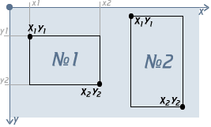

Учебник по Html для чайников. Простейшие.Ступенька 17-ая.Мы уже говорили о картинках и том, как картинку сделать ссылкой. Теперь мы поговорим о картах, но не игральных, к сожалению некоторых. Вы, может быть, знаете, что можно сделать так, чтобы при нажатии на разные области (части) одной и той же картинки, вы попадали на разные страницы, это называется - навигационная карта. Разговор о том, как создавать навигационные карты, растянется на несколько глав, но не пугайтесь, на самом деле это совсем не трудно. Я понимаю, что, возможно, разговор о ссылках затянулся и вам уже порядком надоел, но увы, обучение не развлечение, и если вы действительно хотите делать сайты своими руками и изучить html, то придется потерпеть :) Итак, сначала теория. Навигационные карты задаются тэгом <map></map>. Тэг <map> включает себя тэг(и) <area>, которые определяют геометрические области внутри карты (в этой главе это будут прямоугольники) и ссылки, связанные с каждой областью (т.е. куда вы попадете при нажатии на какую-либо часть нашей карты).
Дальше уже будем тренироваться на кошках :) (на конкретных примерах)
Для начала нам нужна картинка. Возьмем такую:  Картинка простая - всего лишь голубой прямоугольник (240х140 пикселов). Представьте, что прямоугольники №1 и №2, нарисованные на нем, - это изображения каких-либо кнопок, а голубое - какой-то сложный фон. Чтобы не создавать сложную таблицу (о них, о таблицах, мы поговорим немного позднее), вы решили не резать картинку на много частей и не вычленять кнопки, вы решили поступить проще - создать навигационную карту, где области №1 и №2 (прямоугольники) будут ссылками. Итак, мы уже знаем, что геометрические области и то, куда пользователь попадет при нажатии на них, определяет тэг <area>, естественно, при помощи своих атрибутов. Это атрибуты shape и coords. Атрибут shape - определяет форму области: будет ли она прямоугольником (shape="rect"), кругом (shape="circle") или многоугольником (shape="poly"). Сейчас мы будем работать с прямоугольной областью, поэтому:
Атрибут coords - определяет координаты (положение нашей геометрической формы). Число координат и порядок их значений зависят от выбранной нами формы.
"Стоп! стоп!" - скажете вы, - "Какие координаты?" - Те самые, вспоминайте школу и уроки геометрии :)  Полагаю, что это всем должно быть ясно. Отсчет ведется от левого верхнего угла картинки, считайте его началом координат (0;0). Если мы работаем с прямоугольной областью, то нам нужны координаты верхнего-левого и нижнего-правого углов области. Порядок записи координат для атрибута coords следующий: <area shape="rect" coords="x1,y1,x2,y2"> В нашем примере у прямоугольника №1 координаты такие: x1=25, y1=36, x2=114, y2=98 Значит, код будет выглядеть следующим образом:
Теперь пропишем, куда будет ссылаться наша область, для этого нам понадобится уже знакомый нам атрибут href:
Все бы хорошо, но этого все еще не достаточно, чтобы часть картинки стала ссылкой, нам нужно еще указать имя карты и связать ее с картинкой.
У тэга <map> есть атрибут name - имя карты, давайте назовем карту - karta1:
Для того, чтобы связать карту с картинкой, надо использовать атрибут usemap="#имя_карты" для картинки:
Смотрим результат (нажмите на прямоугольник №1):

Теперь сами пропишите <area> для прямоугольника №2 для тренировки (x1=153, y1=11, x2=219, y2=127), а затем шагайте на следующую ступеньку, где мы продолжим разговор о картах.
<<< Ступенька 16-ая: Назад | Далее: Ступенька 18-ая >>>
|
|||||||||||||||||||||||||||||